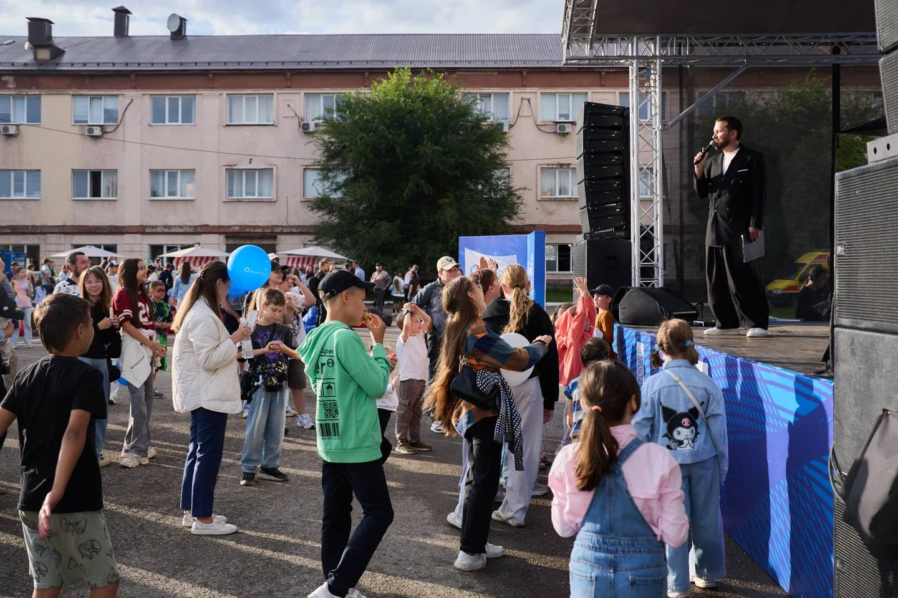
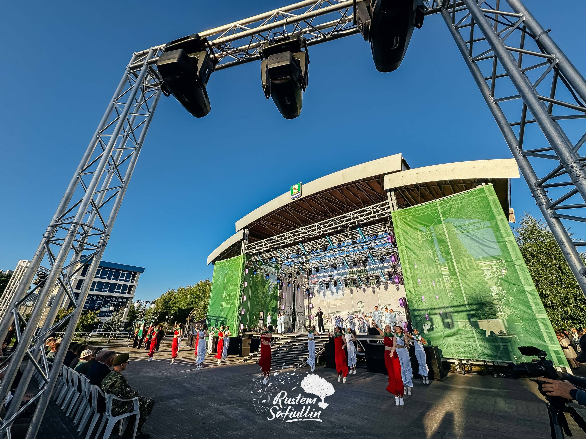
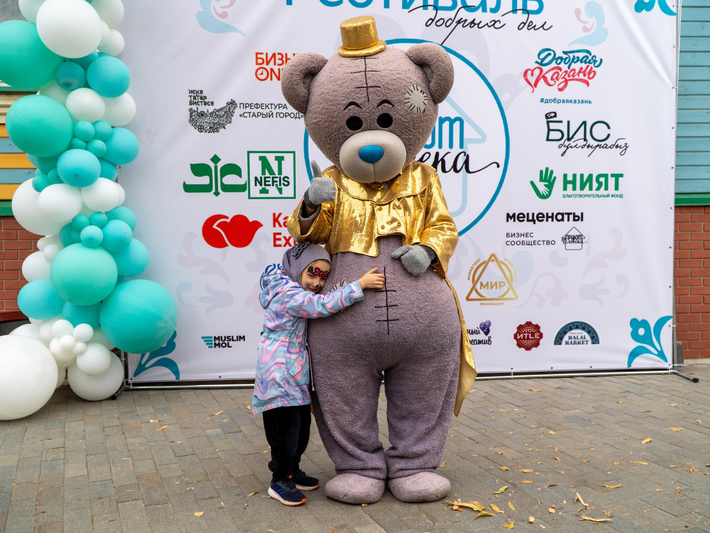
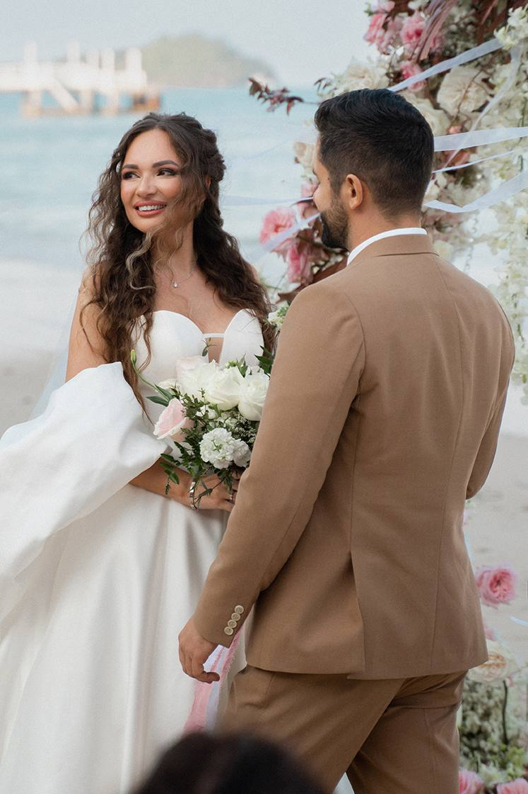

Реализованные события
Наши
проекты.
Мероприятия для бизнеса, города и людей. Каждый проект можно открыть и посмотреть подробнее.

Корпоративное событие · 2026
«ХимФест» ↗
Технополис «Химград»

Городской праздник
День города Зеленодольск ↗
20+ творческих коллективов

Благотворительный проект
Фестиваль добрых дел ↗
3 500+ гостей · Казань

Частное событие
Свадьба на Пхукете ↗
Церемония у моря и праздничный банкет
Партнёрство
Нам
доверяют.
В портфолио — городские, корпоративные и благотворительные события. Благодарности партнёров и организаторов можно посмотреть в оригинале.
События для людей, городов и брендов.Казань · Офлайн / Онлайн / Выездные мероприятия
Документы
Благодарности
и отзывы.
Настоящие письма и отзывы от организаторов, партнёров и заказчиков. Нажмите на документ, чтобы открыть оригинал.
Контакты · Казань
Давайте создадим
событие вместе.
Обсудим ваш проект и подберём оптимальное решение.
Офлайн / Онлайн / Выездные мероприятия